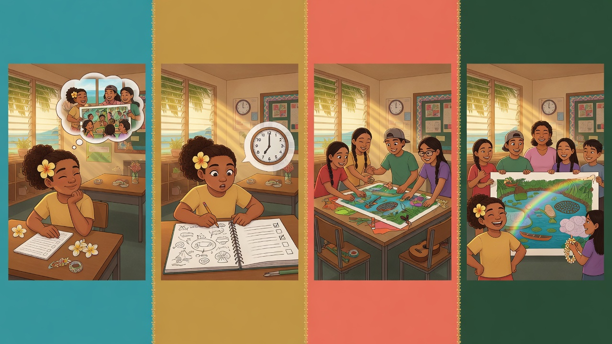
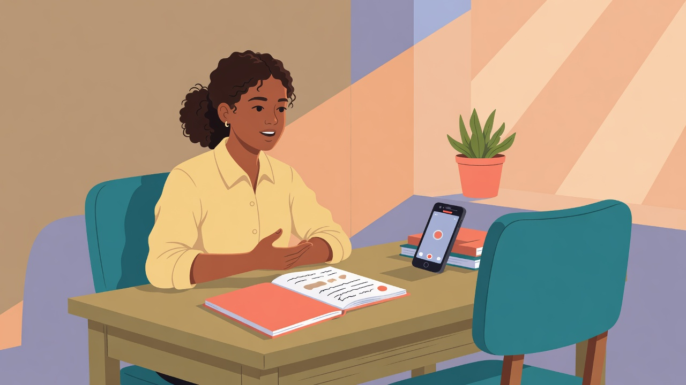

About 8 minutes. You will know what this lesson teaches, what it does not include, and how to finish it on your own.
You can practice with a person. You can also practice with an empty chair. Either way, you leave with an answer you have said out loud and then revised.
Why this lesson exists
Landing an interview is the first step. The conversation itself can decide a scholarship, a college offer, an internship, or a job. A strong application gets you into the room. The answers you give in the room are a different skill. This page is where you learn that skill. It is the teaching, not a list of reminders.
You will draft answers from your own experience, tell one challenge in a clear order, and check one spoken answer the way an interview rubric does. A partner, a printed packet, and a Google account are not required. If someone is with you, there is a way to practice together. If you are alone, the empty chair is the full practice, not a lesser one.
The pre-check is on your lesson page, not in these boxes. It asks what you think before the teaching. The official questions stay on that assessment. Nothing on this page is a copy of that test. The lesson practices hoʻokūpono.
What you will be able to do
By the last topic you should be able to do four things without looking back. First, name what helps a first impression, including what you would wear for a real workplace, and name the question an employer is not allowed to ask. Second, hear a common interview question even when the wording changes, and predict one question from the duties of a role. Third, draft three answers from your own life, including a challenge told as a situation, a task, an action, and a result. Fourth, say one answer out loud, give it an honest mark, and say it again with one change.
Read a topic all the way through before you open the check. The check asks you to use the idea, and the explanation above it is what makes the idea usable. You can move between topics in any order. When you finish, the post-check is a separate save on your lesson page.
Check the box when you have read this opening and you are ready for the pre-check. Next you will sort a first impression.
About 15 minutes. You will know what to do once you are in the room, what an employer may not ask, and how to dress for the work rather than for a costume.
The first impression is the answer, the pace, and whether you look ready for that workplace.
Why the first minutes matter
The person across from you is trying to picture you doing the work. They build that picture from whether you answer the question they asked, whether they can follow your voice, and whether you seem to understand the place you are walking into. A perfect outfit does not repair an answer that misses the question. A careful answer can survive ordinary clothes. Both still matter, and they matter for different reasons.
What to do while you answer
Look at the person who asked. If several people are in the room, begin with the one who asked the question, then include the others as you keep talking. You do not have to stare. Looking down for the entire answer makes a clear sentence harder to trust, because the listener loses the sense that you are talking to them. If looking straight into someone’s eyes makes the words harder to find, look at the person’s face and keep your voice aimed at them. That still counts as being with the person who asked. The check treats eye contact as something you do.
Answer the whole question. If they ask for a strength and an example, a one-word label is only the first half. Finish the part they asked for before you add a story they did not request. People often hear the first familiar word, get nervous, and answer a nearby question instead. Slow down enough to notice what was actually asked.
If you miss the question, ask them to say it again. That is a sign that you want to answer the right thing. Guessing, then talking for a minute about a different subject, is harder to recover from. You can say, “Could you say that once more?” and then answer.
Speak clearly, and slowly enough that they can follow. Rushing and mumbling hide a good example. A short pause while you find the next sentence is allowed. The listener would rather wait one second than hear three sentences run together.
Use an example that matches the question. A story about a different skill does not answer the question in front of you, even if the story is true and impressive. If they ask how you handle a disagreement, a story about winning an award is the wrong example. Save it for a question about an achievement.
What to wear
Wear clothing that fits the workplace you are interviewing for. A lab, a kitchen, an office, a classroom, and an outdoor crew do not look the same, and the interviewer is picturing you on that kind of day. There is no single outfit for every high school interview. A suit can be right for a formal office and wrong for a nursery. Public guidance for first jobs says the same thing this lesson says: match the work, then look one step tidier than a normal day in that place.
Find the match before you choose the clothes. Read the posting for words such as outdoors, kitchen, lab, or office. Look at the organization’s own photos of people doing the job. If you can visit, notice what the staff wear while they work. Then pick clothes you can actually do that work in, clean and a little more careful than a day off. Name the role first, then one thing you would wear there. You do not need a formal outfit you do not own. Closed shoes and a shirt you can move in can be the right answer for a nursery. A simple button-down shirt with long pants or a simple skirt can be the right answer for a records office. Those are examples of matching the work. They are not a dress code for every job.
What they do not get to ask
An employer does not get to ask about your health, or whether you have a disability, unless the job itself states a health requirement. The U.S. Equal Employment Opportunity Commission states the rule for the time before a job offer: an employer may not ask if you have a disability, may not ask about the nature of a disability even when it is obvious, and may not ask medical questions or require a medical exam. Questions about medications, a diagnosis, or a past injury sit in that group. They are likely to make you reveal a disability, so they are not ordinary interview questions.
What they may ask, before an offer, is whether you can do the job and how you would do it. A posting that says you must be able to lift a stated weight, or stand for a stated time, is a task. “Can you lift this, and how would you do it?” is a question about the work. “Do you have a disability?” is a question about you. Even when the posting lists a physical task, the fair question is about that task. After a job offer, an employer may ask medical questions only if every new person in that same job has to answer them. That is a later step. It is not a reason to answer a personal health question in the interview.
You choose whether to talk about a disability. Disclosure is yours. This lesson will not tell you to share it, and it will not tell you to hide it. If you need a change in how the interview is run so that you can take part, you can ask for that change. That request is about the interview itself. It is separate from telling your medical story. In the sort below, an employer asking about a disability when the job lists no health requirement is the line to skip. Eye contact, a complete answer, asking for the question again, and a fitting example are things you do.
Worked example. Someone interviewing at a plant nursery says they would wear closed shoes and a shirt they can move in, because the day includes watering and carrying trays. They would not wear that outfit to an office interview for a records role. When the nursery interviewer asks about a time they kept a record, they look at the interviewer, answer the whole question, and use the watering log. They do not switch to a story about a sports award. If a second question is about their health, and the posting lists no health requirement, they do not treat that question as one they have to answer.
Your turn: mark each line do or skip, then name a role and one thing you would wear for that workplace.
About 18 minutes. You will understand what common interview questions are really asking, and how to predict one from the duties of a role.
The wording changes. The intention does not.
Interviewers rarely use one official script. “Tell me about yourself” and “Walk me through who you are” are the same request. “Why should we accept you?” and “Why you?” are the same request. If you memorize a single sentence and they change three words, it can feel as if you never prepared. Prepare the intention. Then listen for which intention you are hearing.
Read the list once for meaning. You do not have to draft every answer today. You do need to know what each question is for, so that a new wording does not send you into the wrong story.
Questions about you
Tell me a little about yourself. They want a short map: two or three facts, two or three things you have done, and one sentence on why that fits this role. They do not want your whole life from childhood. A stranger should be able to repeat your answer.
How would other people describe you? They are asking for a reputation you can support. A word such as “reliable” needs the event that taught people to use that word.
What is a professional or academic achievement? They want one finished thing. Name what you made, led, measured, or taught, and what changed because of it.
What are your greatest strengths? A strength is a skill connected to the role, shown in an example. A slogan is not a strength.
What do you consider to be your weaknesses? They want an honest limit and the practice you have already started. A weakness with no plan sounds like a dead end. A weakness that is really a brag, such as “I work too hard,” does not answer the question either.
Tell me about a challenge you faced and how you dealt with it. They want your actions in order. The next topic shows how to tell that story in four beats so the listener can follow.
Where do you see yourself in five years? They want a direction that could include this kind of work. You do not need a locked plan. You do need a reason this role is a step, not a detour you will abandon.
What is your dream job? The intention is the same as the five-year question. Describe work you want to be good at, then name what this role lets you practice toward that.
What do you do outside of work or school? They are listening for how you spend time and for something you might bring. You choose how personal to be. A hobby is enough if you can say what it shows about how you work.
If you were an animal, which would you be? The animal is not the point. The explanation is. Pick one trait and connect it to how you work with other people or with a task.
Questions about them, the role, and the work
How did you hear about the position? They want to know you found the real opening. Name the person, the posting, or the program. A vague “online” is weaker than the actual source.
What do you know about the organization? This is where reading ahead shows. Say one true thing about their work or their goals. Guessing a mission statement you do not remember is easy to hear.
Why do you want this position? Connect one of their duties to something you want to learn or have already done. “It seems fun” does not tell them you understand the work.
Why should we accept you? Three ideas belong in this answer. You can do the work. You fit the people you would be with. You bring something another candidate might not. Later you will say this one out loud.
Who else are you interviewing with? A short honest answer is enough. You do not have to give every name. You can say you are talking with more than one place, or that this is the role you are preparing for now.
What do you want in a position, and what work environment do you prefer? They are checking for a match. Describe the kind of day you do your best work in: a team, independent tasks, time outside, careful records, or teaching someone else. Then notice whether their duties match that day.
Tell me about a time you led. Leadership here means you were responsible for a result, not that you had a title. Say what you were responsible for and what other people did because of your action.
Tell me about a time you disagreed. They want to hear that you can differ and still finish the work. Include what you said, what you heard, and how the task ended.
How do you handle pressure? Give a real situation and the first useful thing you did. “I stay calm” is a claim. “I wrote the steps down and did the first one” is an answer.
Do you have questions for us? This is your turn to learn about the role. Ask about the work, the people, or what a good first month looks like. “No, I think you covered it” gives away the chance to show you were listening.
How to predict the question they will actually use
A useful way to prepare is to read the qualifications and the duties of the role. The questions usually come from that page, not from a secret list. If a duty is “keep a log of watering,” they may ask about a time you kept records. If a qualification is “works with other people,” they may ask about a team, a disagreement, or a time you led. Underline one duty before you draft. Your story should be about that duty.
Worked example. A posting for a weekend garden assistant lists two duties: water the beds and show younger students how to record what they see. The predictable questions are about a time you kept a record, and a time you explained a step to someone else. A story about a soccer game does not answer either duty, unless the story is really about teaching a teammate a play and you say that connection out loud.
Your turn: pick one question you will prepare, name a role you might interview for, and write one qualification or duty you would look up before you walk in.
About 15 minutes. You will be able to tell one challenge from your own life in four beats, so a listener can see what you did.

Situation, task, action, result. The action is the part most people skip.
Why a challenge answer falls apart
When someone asks about a challenge, it is easy to describe the whole week and never say what you did. The listener hears the problem, hears that it was stressful, and still does not know whether you can be trusted with the next problem. STAR is a way to keep the story in an order a stranger can follow. The four beats are situation, task, action, and result. Use them for the challenge question. You can also use them for a time you led, a time you disagreed, or a time you were under pressure.
The four beats
Situation is where you were and what was going wrong. One or two sentences are enough. The listener needs the setting: a class, a shift, a family job, a team. They do not need every person who was standing nearby. If you cannot say what was going wrong, you do not yet have a challenge. You have a description of an ordinary day.
Task is the part that was yours. Groups often say “we had to finish it.” That hides your responsibility. Name what you were supposed to do, even if the assignment was shared. “I was the person who had to get the measurements written down before Friday” is a task. “The project was hard” is not.
Action is what you did. This should be the longest beat. Say the step you took, in the order you took it. “We hoped it would get better” is not an action. “I asked each person which part they could do well, and I took the measuring” is an action. If the story could be told with you removed and nothing would change, you have not reached the action yet.
Result is what changed because of that action. A result can be small. The group finished. The count was right. A younger student could do the next row alone. Someone asked you to do it again. If you have a number, use it: how many, how long, or what changed. If you do not have a number, say what became possible afterward, or what you do differently now. If nothing changed, the lesson you carried forward is the result. A story with no result leaves the listener wondering whether the action mattered.
Career centers that teach this method ask you to keep the whole story to about one or two minutes, and to spend most of that time on the action. A sentence or two sets the situation. One sentence states the task. The middle is the steps you took. The ending is short. Use “I,” not “we,” once you reach the action. The interviewer can only judge the part you personally did. Questions that begin “tell me about a time” are asking for this same shape, including a time you led, a time you disagreed, and a time you were under pressure. School, a family responsibility, a team, and volunteer work all count. You do not need a paid job to have a result.
You can draft with this frame, then turn it into speech: “I was in [place] when [what was going wrong]. I was responsible for [your part]. I [first step], then I [next step]. Because of that, [what changed].” Put your life in the blanks. Do not put the example below into the blanks.
Worked example, already used, so do not copy it. In English class the group worked in small groups. Each person had an assigned role, and nobody wanted the role they were given. One student suggested that each person do the part they were best at. After that, the group worked together better than before. Situation, task, action, and result are all in that story. Copying it does not show your life. Write a different challenge from school, work, or home, and use all four boxes.
Your turn: write your own four beats. The English-class story is the example. It is not your answer.
About 15 minutes. You will draft three answers a stranger could follow: about you, a strength, and a weakness.
Why these three show up so often
Many different wordings collapse into three requests. Who are you, in a form I can use. What can you do that this role needs. Where are you still learning, and are you already working on it. If you can say those three clearly, you can adapt them when the interviewer changes the sentence. Write them down before you try to say them. Writing shows you the spot where the sentence runs out.
About yourself
Give two or three facts, then two or three things you have done, and end with why that fits the role. Facts are stable details: the kind of schoolwork you focus on, a place where you help, a skill you practice every week. Accomplishments are finished things: a project you completed, a responsibility you kept, a result you can point to. The last sentence is the bridge. It tells the interviewer why those facts belong in their workplace.
Say it in about 60 to 90 seconds. High school career centers describe this answer as the trailer, not the whole movie. The three parts above are the whole trailer. If you read a resume line by line, you will run long, and the listener will stop tracking which fact mattered. Choose the lines that match the duty you looked up.
Use the resume from the college application lesson if you have it. The resume is a list of evidence, and this answer is the spoken version of a few lines from it. If you do not have that resume, use a skill you have really practiced. Do not invent a job. A true small example is stronger than a borrowed impressive one, because they may ask you to keep talking about it.
A strength
Name the skill, then show it in an event. “I keep a log when I measure, so the next person can see what changed” is specific. “People person” is a slogan. “I am a people person” is the same slogan. “Hardworking” is a slogan too. None of those tell the listener what you do. “Excellent communication” is closer to a skill, and it still needs the example: communication with whom, about what, and what happened because you explained it.
Match the strength to a role you might actually interview for. A garden program needs a different proof than a records office. If the duty is teaching a younger student, the strength should sound like teaching. If the duty is careful measurement, the strength should sound like measurement. A strength that could be pasted onto any job has not been chosen yet.
If you cannot name one, ask a trusted adult what they have seen you do well. Take their word, such as organized or patient with younger students, and turn it into a skill plus one event. Bring one strength that matches a duty, and keep a second one as a spare if the conversation stays on you. Five strengths in a row start to sound like a list you memorized.
A weakness
Pick a real limit. Then say what you are already doing to get better. “I used to rush when I explained a step. I now write the step down and practice saying it once before I speak” is a weakness with a practice plan. “I have no weaknesses” does not answer the question. A weakness that is the main duty of the job is a risky choice: if the role is recording data, do not offer “I lose track of numbers” unless you can show a serious improvement already underway.
You do not have to disclose a disability in this answer. That remains your choice, the same choice as in the first-impression topic. A weakness can be an ordinary work habit. It does not have to be the most personal thing about you.
Worked example. A thin strength is “I am a people person.” There is no skill and no event. A usable version from the same student is “I can show a younger student how to record a measurement, because I did that every week in our garden log.” A usable weakness from that student is “I used to skip the date on the log. I am getting better by checking the date before I put the notebook away.” The strength matches a teaching-and-recording role. The weakness includes what they are already doing to get better.
Your turn: draft all three. You will say one of them, or the “why you” answer, out loud on the next screen.
About 15 minutes. You will say one answer out loud, mark it honestly, and say it a second time with a real change.
Why speaking is a separate skill
A written draft can look finished and still fall apart when you hear it. Pace, clarity, and the example show up only in the voice. People write a careful paragraph and then, out loud, rush the first line, drop the example, or add three new ideas that were not in the draft. This topic is the rehearsal. The question is “Why should we accept you?”
Cover three ideas if you can. You can do the work: name a duty and a time you did something like it. You fit the team: say how you work with other people when the task is shared. You bring something another candidate might not: a skill, a language, a record you kept, a younger student you taught, a measurement you learned to trust. One story can carry more than one of those ideas. Give a reason with “because,” and include something you learned, helped with, built, measured, or taught. A list of adjectives, with no event, is not this answer.
A full challenge story, told in the four STAR beats, often needs closer to a minute or two. This rehearsal is shorter on purpose. Forty-five seconds forces the three ideas to stay and the extra sentences to go. If you cannot finish, cut the life history at the front. Keep the example.
With a partner
Your partner asks, “Why should we accept you?” You answer as if they were the interviewer. They do not help you mid-sentence. They listen for three things only: whether the pace is steady or rushed, whether the words are clear or mumbled, and whether the example fits a real role. Then they tell you what they noticed, in those words, and give you a mark from 1 to 5. You write down the question they asked and the note they gave you. After that you may switch, so they get a turn.
No partner: the empty chair

Set a timer for 45 seconds. Sit across from an empty chair, or prop up your phone and record. Say the answer to the chair as if a person were sitting there. Look at the chair, not at the ceiling. When the timer ends, stop, even if you wanted another sentence. Play the recording if you made one. Hearing yourself is part of the practice, because pace and mumbling are hard to notice while you are talking. Give yourself a mark. Then say the answer once more and fix the weak part. Write the words you said, your note on pace, clarity, or the example, and what you changed the second time.
How the mark works
The mark is about the spoken answer. It is not a grade on whether you are a good person, and it is not a grade on your life. Use the same scale whether a partner marks you or you mark yourself. Be specific in the note. “It was fine” does not tell you what to keep.
1. The answer was rushed or mumbled. The ideas were hard to follow, and the example did not fit the question.
2. A listener had to work to follow you. An example was there, and it was a stretch for the role.
3. The answer was a little unclear. One example fit.
4. The pace was steady enough to follow. A few examples fit the role.
5. The answer was clear and steady, and the examples fit the work you said you could do.
Choose the path you can do right now. If you pick a partner, you will write their question and what they noticed. If you pick the empty chair, you will write what you said, your own note, and the change you made on the second try. The other boxes stay hidden. The mark is for both paths. A 3 with a clear note is a better practice than a 5 you cannot explain.
Your turn: choose partner or empty chair, give the mark, and write the note that matches that path.
About 10 minutes. You will keep one change for next time, and you will leave with a real question to ask them.
What to do with the note you just got
A practice is wasted if the note disappears. Separate what you will repeat from what you will change. “I will keep the garden example, and I will slow the first sentence” is a usable plan. “I will do better” is not, because tomorrow you will not know which part to change. Look at the mark you gave. If it was a 1 or a 2, the change should be about pace or about making the example fit. If it was a 4 or a 5, the change can be smaller: cut a sentence, or add one detail the listener still had to guess.
After a real interview, you can ask for one suggestion to use next time. You might say, “What is one thing I could do differently in my next interview?” Asking shows that you want to learn. You do not have to wait for them to offer. They may not have a suggestion. The question itself is still worth asking, and you can write down whatever they do say.
A question you ask them
You also leave with a question about their role, not a question about your own performance. This is the question you would ask before the interview ends. Good material is the work itself: what a normal day includes, who you would work with, what they hope a new person can do in the first month, or which skill from the posting matters most. “What is the pay?” can be a fair question later. It does not show that you listened to the duties. Build this question from the duty you looked up earlier, so it could only belong to that role.
Prepare two questions, and keep the second one in your head. Interviewers often answer the obvious question while they are describing the job. If your only question was “What does your organization do?”, and the goals were on the first page of their site, you have nothing left to ask. “Which of these duties takes most of the first month?” shows you read the duties and want the real proportion. The check on this page asks you to write one question. Bring the spare to the real interview.
One limit matters as much as the question. Do not repeat another person’s private story when you describe what you learned. If a partner told you something personal while you were practicing, that story stays with them. Talk about your own answer and your own change.
Worked example. After the empty-chair practice, a student writes: “I will start with the watering log instead of with my name, because the example got lost.” Their question for a garden-assistant interview is: “What should I be able to record on my own by the end of the first month?” That question comes from the duty. It is not a question about their nerves.
Your turn: write the one change you will make, and one question you would ask the interviewer about the role.
About 10 minutes. You will say why this practice matters for work or school, who else could use it, and how an organization’s goals change your answer.
Why the practice changes the outcome
The interview is where a written application becomes a decision. You can have the right experience and still lose the chance because the answer was rushed, missing, or about the wrong duty. Saying the answers ahead of time raises the chance of being hired, admitted, awarded a scholarship, or offered an internship. The same questions show up in more than one of those rooms. A scholarship interviewer and a job interviewer may both ask why they should accept you. The duties change. The shape of a clear answer does not.
You already did the hard part of this lesson if you said an answer out loud and changed it once. That revision is the skill. People who only read sample answers never hear their own pace. People who only speak once never find out which sentence to cut.
Teaching it to someone else
You can practice the same questions at home so other people get a turn. Pick one question you now understand. Ask it. Listen the way your partner listened, or the way you listened to your recording. Tell them what you noticed about pace, clarity, or the example, and let them say it a second time. Teaching the question will also show you which part you only half understand. If you cannot explain why the example has to match the duty, you are not ready to stop practicing that part.
Your background and their goals
Your own background can be useful when the organization serves your community. Read their goals before you go. If a program’s goal is to teach younger students how to grow food, then a skill you have in growing, measuring, or explaining a step is a direct connection. Say that connection in the “why you” answer. Do not assume they know it because you grew up nearby.
If the organization does not serve your community, you can still prepare. Read the goals and name a skill they need. The point is that you looked at their work and tied a real experience to it. A general love of the mission, with no skill attached, is harder for them to use. You choose how much of your family or culture to share. The lesson does not require a personal story. It requires a true link between their goals and something you have done.
Worked example. An organization runs after-school science in the neighborhood where a student’s family lives. The student has kept a garden log and has shown a younger cousin how to write a date and a measurement. In the interview they say they want the role because the organization’s goal is teaching local students to record what they observe, and they have already done a small version of that at home. They offer to practice one interview question with a sibling. The background is useful because it matches the goal. The family practice is how the skill spreads.
Your turn: three short answers close the lesson. Why this practice matters for work or school. One way you could practice it with family or community. How your background, or what you learn about the organization, could help. The post-check is a separate save on your lesson page.